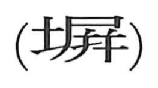

塀

Kun: | On: hei
wall ・ fence
Explanation
塀 is a phono-semantic compound: the left side is 土, indicating earth or clay, while the right side is 屏, supplying both the sound hei and the idea of screening or covering. The ancient Shuowen defines 屏 as “to cover,” and the graph came to denote things like screens and partitions, as seen in words such as byobu (folding screen) and heisho (screen or sliding partition). With the addition of the earth radical, the meaning narrows to an outdoor barrier—an earthen wall or fence built of packed clay—distinguishing it from indoor screens.